01
Anthropic 扩大高级网络安全能力的认证访问
Anthropic 扩大 Cyber Verification Program，为符合资格的安全专业人员提供高级网络能力及较少的阻断分类器限制。配套官方消息提及 Claude Mythos 5.1、Opus 5.5 和 Sonnet 5.5，并强调面向防御工作的保障措施。这既是能力开放，也是访问政策调整，团队需评估资格及使用限制。
每天一次，过滤 AI 噪音
Anthropic 扩大 Cyber Verification Program，为符合资格的安全专业人员提供高级网络能力及较少的阻断分类器限制。配套官方消息提及 Claude Mythos 5.1、Opus 5.5 和 Sonnet 5.5，并强调面向防御工作的保障措施。这既是能力开放，也是访问政策调整，团队需评估资格及使用限制。
Atlassian 与 OpenAI 宣布扩大合作，将前沿模型与企业知识连接，帮助团队规划、构建和交付工作。已采集公告未提供量化效果或详细推出时间表。这体现了模型能力进一步进入企业工作流的方向，而相关内部信息的获取同样关键。
OpenAI 与 Ironclad 介绍了围绕复杂合同流程训练和评估智能体的工作。其重点是专业环境中的计算机操作，成功取决于完成应用流程，而不仅是生成可信答案。已采集公告没有基准数字，因此应关注评估方法及实际执行可靠性。
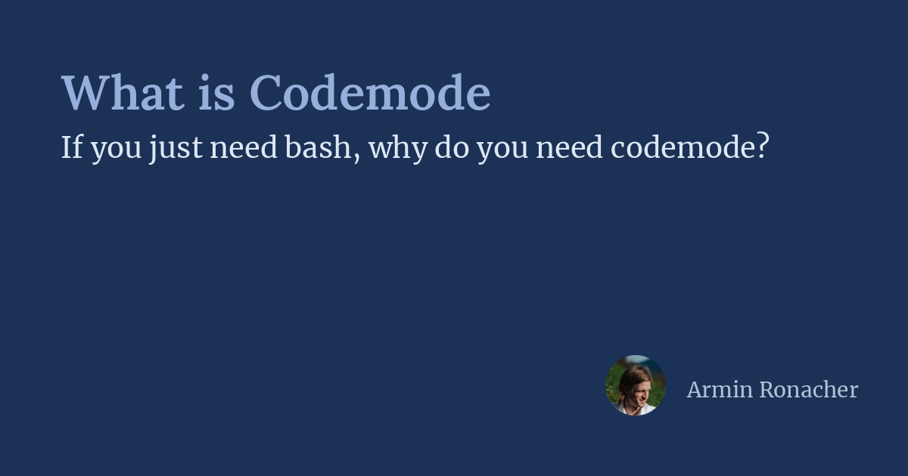
Armin Ronacher 介绍 Pi 的 Codemode：模型通过 JavaScript 在框架侧编排工具。代码运行于 WASM 内的 QuickJS，限制直接网络和文件系统访问，但可组合调用、处理结构化输出并跨调用保存数据。该设计区分工具编排与应用执行环境，减少不必要的输出进入模型上下文。
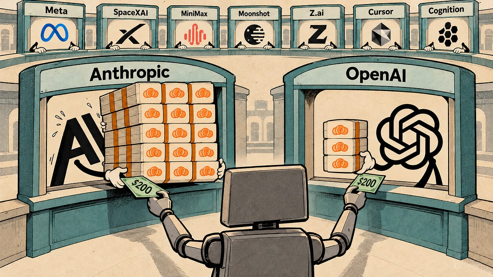
SemiAnalysis 发布 AI 订阅额度测试比较，标题称 Anthropic 订阅价值超过 OpenAI 五倍。已采集摘要说明覆盖多家模型与编程工具厂商，但不足以将该比例推广至所有工作负载。采购决策应进一步查看测试假设、用量限制与具体套餐条款。
Mistral 文档显示，Large 4 于 10 月 6 日进入公开预览，是开放权重的通用多模态模型。其混合专家架构包含 1.05 万亿总参数、520 亿激活参数及 16 亿参数视觉编码器，支持百万 token 上下文、函数调用、结构化输出和智能体工作流。发布规格并不等同于独立测评中的领先表现。
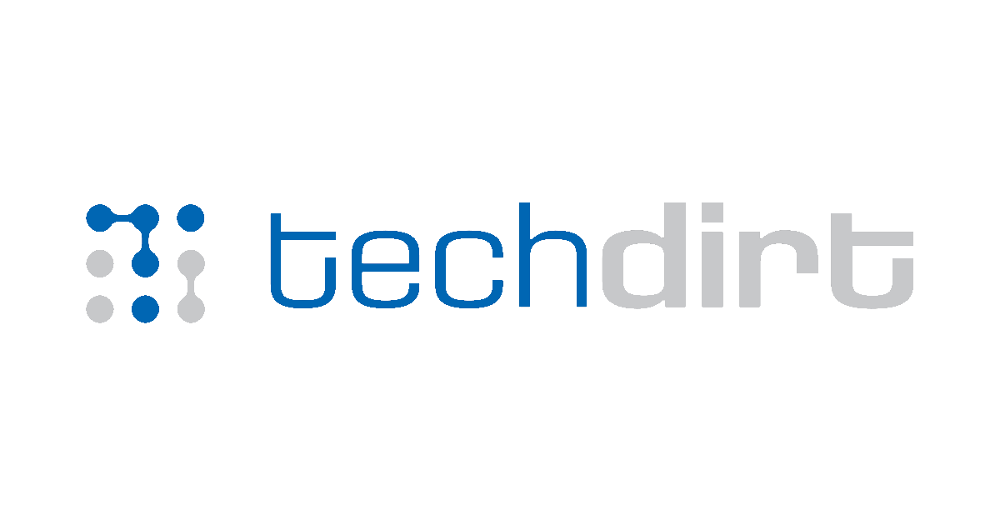
Techdirt 汇总了 Meta Muse 的隐私与安全争议，包括超出用户预期的消息访问、设备访问漏洞、联系人画像及上线前仓促修补问题。这些内容来自相关报道，并非本刊独立审计。随着助手接入通信、购物等敏感服务，权限执行和数据边界成为部署中的关键问题。
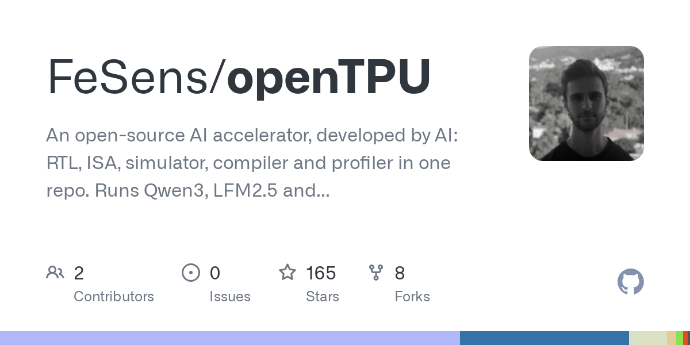
openTPU 将硬件设计、指令集、模拟器、编译器与分析工具放入同一开源仓库。项目报告在 Kintex-7 PCIe 卡上运行语言模型，输出逐 token 匹配模拟器。这是探索 AI 智能体硬件开发能力的实验，也是一套可学习的完整系统；FPGA 结果并不证明量产芯片的成本或竞争力。
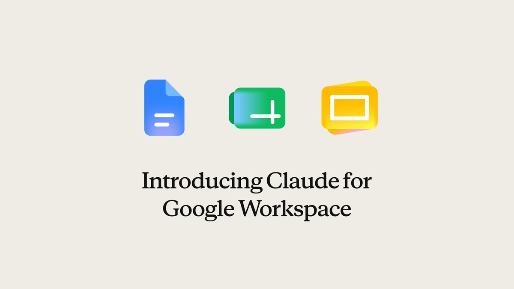
Anthropic 宣布 Claude 可在 Google 文档、表格和幻灯片中使用，这些文件也可在 Claude 内打开。侧边栏助手可读取当前文件并直接编辑，用户能够逐项批准修改。这把文档上下文、直接操作与修改前审核结合在日常办公流程中。
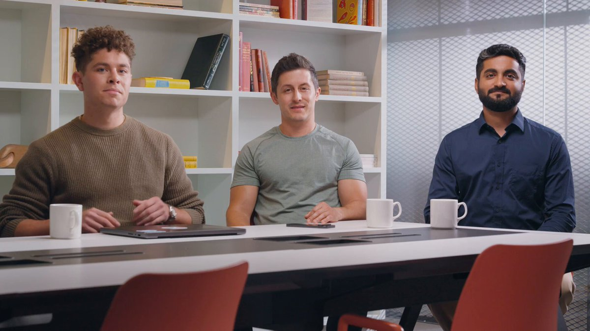
Google 发布 EmbeddingGemma 2，称其为首个原生多模态、面向端侧嵌入的开放模型。模型基于 Gemma 4，采用 Apache 2.0 许可，将文本、图像、视频、音频和代码映射到共享空间。开发者可据此构建跨媒体检索，但具体任务的准确率及设备性能仍需验证。
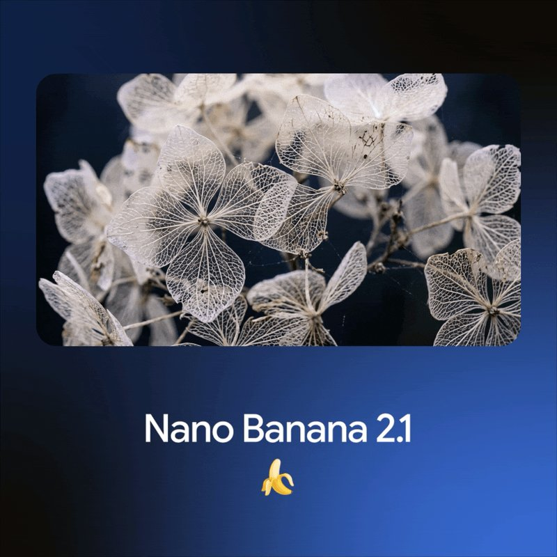
Google 推出图像生成与编辑模型 Nano Banana 2.1，重点宣称视觉设计、蒙版编辑及主体一致性有所提升，并表示整体优于先前模型。这些属于厂商声明。对于需要反复修改的创意工作流，维持主体特征与控制局部编辑尤其重要。
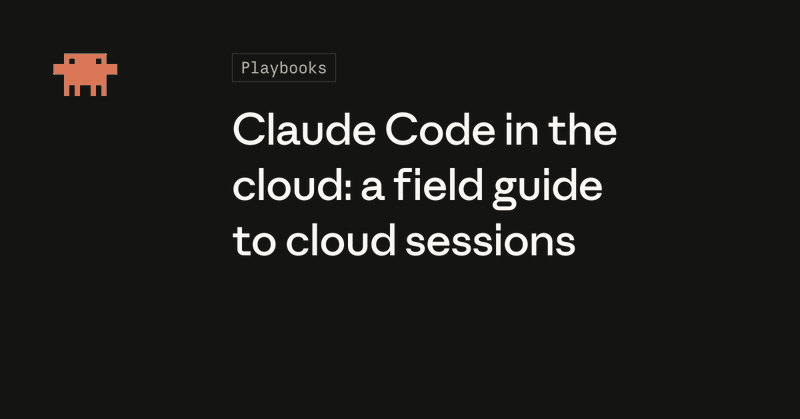
Anthropic 开发者账号发布 Claude Code 云端会话指南，涵盖七种工作流及首次连接 GitHub 的方法。每项任务运行于新的虚拟机，可并行执行，并在用户关闭笔记本后继续。远程执行改变了任务运行方式，实际收益仍取决于仓库特点与审核流程。
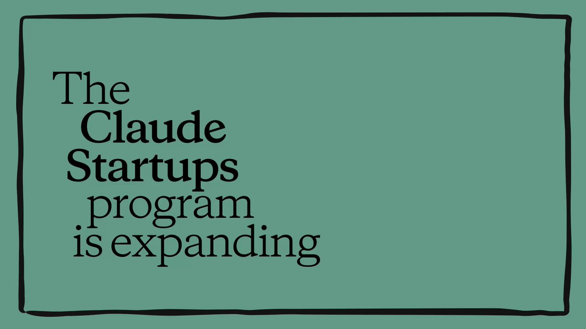
Anthropic 宣布扩大 Claude Startups 计划。成员可获得一年 Claude Team、API 额度、创业工具优惠及 Applied AI 团队答疑。此举影响开发者获取服务的成本与渠道，并非新模型发布；具体资格与额度仍需查看计划条款。
Anthropic 介绍 Every 团队如何基于 Claude Managed Agents 构建公司智能体，通过 Slack 向员工共享技能。在内部获得使用后，团队将其提供给订阅者。这展示了从内部助手走向外部服务的路径，但原文未给出可量化的生产力结果。
Nathan Lambert 主张美国应允许模型蒸馏，认为禁令难以执行，并可能使未来数年的战略竞争陷入困境。这是个人政策观点，不代表新立法或司法裁决。讨论反映了保护模型研发投入与通过更廉价训练扩散能力之间的张力。
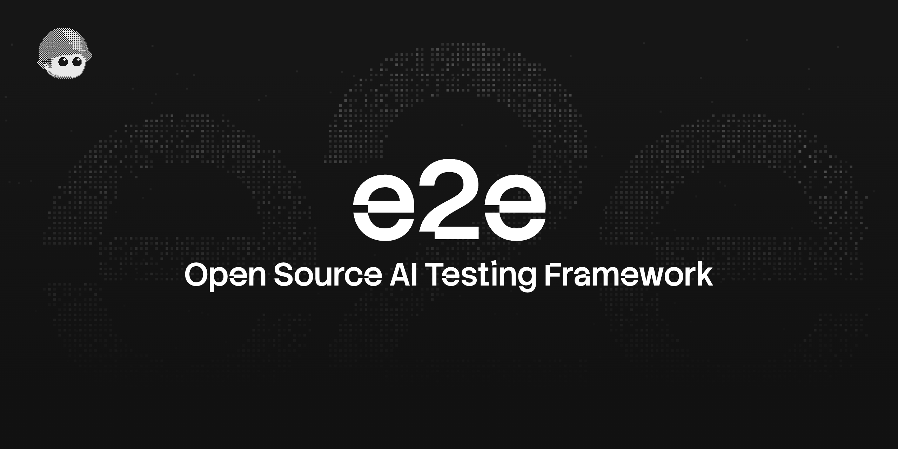
TesterArmy e2e 允许开发者用自然语言描述目标，由智能体操作网页或移动应用，再通过定位器和断言验证结果。README 称，经后续断言验证的步骤可记录操作并重放，在应用变化前无需模型调用。项目仍在迈向 1.0 的开发阶段，接口和配置可能变化。
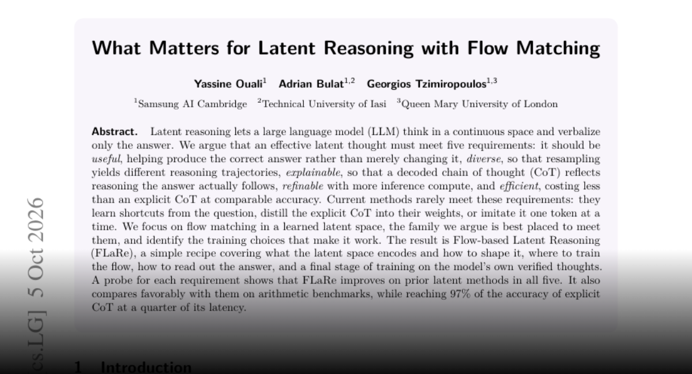
FLaRe 研究在学习到的潜在空间中使用流匹配进行推理，并从有效性、多样性、可解释性、额外计算下的改进及效率五方面评估。作者报告在算术基准上以显式思维链四分之一的延迟达到其 97% 准确率。结果局限于已评估任务，但为检验潜在计算是否真正有用提供了框架。
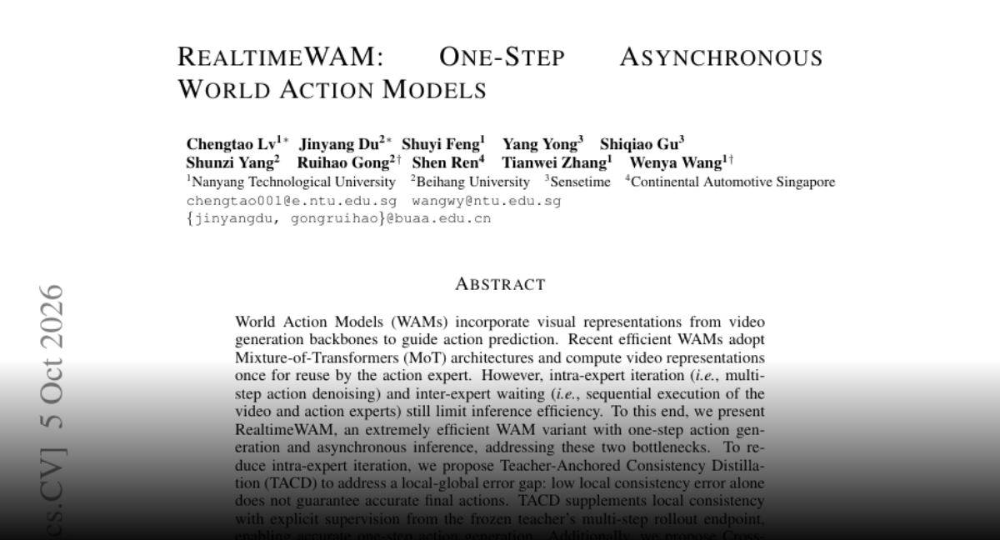
RealtimeWAM 针对世界动作模型中的多步动作去噪及视频、动作专家相互等待问题，结合教师锚定一致性蒸馏与分块 KV 缓存共享。作者报告在测试基准上性能下降小于 1%，H100 端到端加速约 25 倍。收益需要结合所测模型和硬件理解。
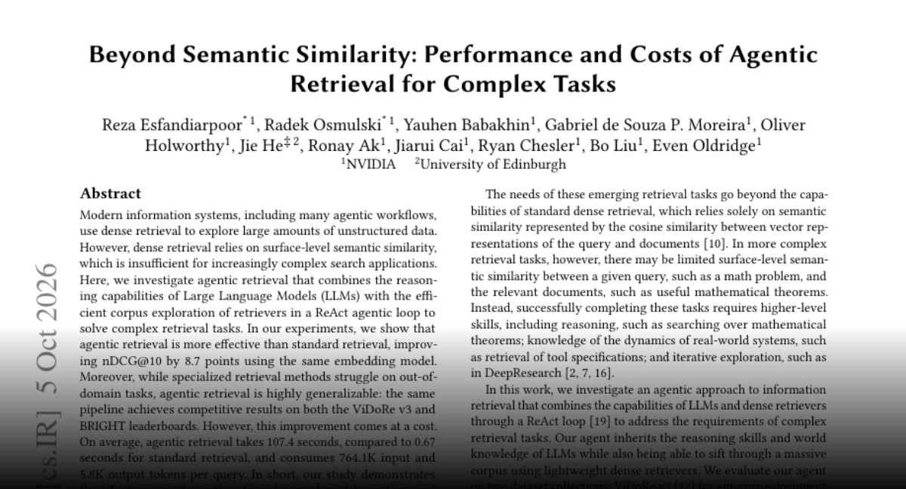
研究将语言模型推理与检索器结合到 ReAct 循环，在相同嵌入模型下报告 nDCG@10 提升 8.7 点，并在 ViDoRe v3 与 BRIGHT 上表现出泛化能力。但平均查询时间由 0.67 秒增至 107.4 秒，每次查询消耗约 76.41 万输入 token。是否启用智能体检索需同时考虑质量、延迟与成本。
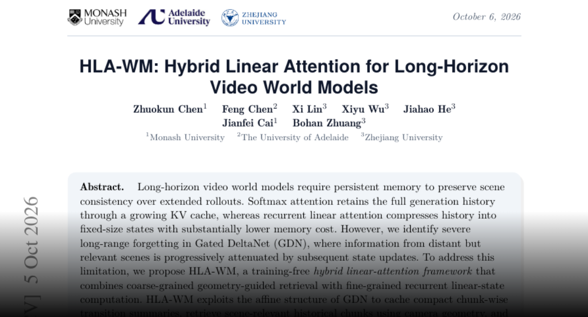
HLA-WM 针对线性注意力视频世界模型的长期遗忘，缓存紧凑转移摘要，利用相机几何检索历史片段，再构造查询专属状态。作者在 60 秒基准上报告重访一致性与相机控制改善，相比完整 KV 缓存历史状态内存降低 12 倍，吞吐下降不超过 1.6%，且无需额外训练。
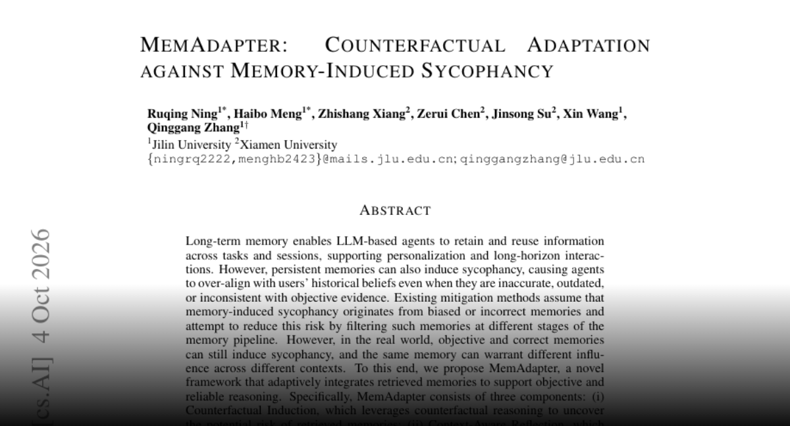
MemAdapter 研究持久记忆如何使智能体过度迎合用户过去的观点。作者认为，仅过滤错误记忆并不足够，正确记忆也可能被错误地赋予过高影响。方法结合反事实分析、上下文反思与证据推理，并在三个基准上报告可靠性改善。评估应关注记忆如何影响决策，而不只是事实是否正确。
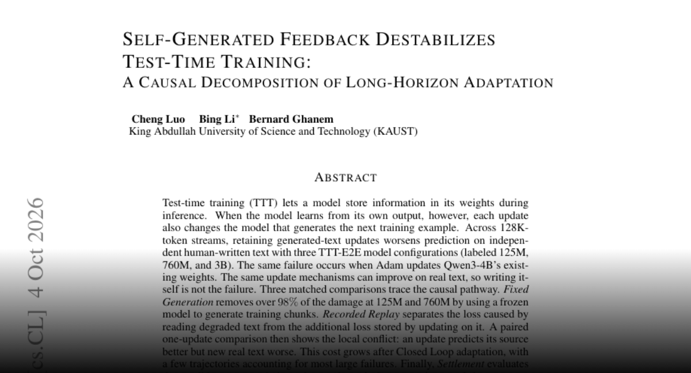
研究发现，在长文本流中保留由模型自生成文本带来的更新，会恶化对独立人类文本的预测。配对实验区分了输入退化与权重更新损伤；冻结生成器在两个较小配置中消除了大部分损伤。作者提出在保留更新前用独立真实文本进行检验，结论限定于所测模型及更新机制。
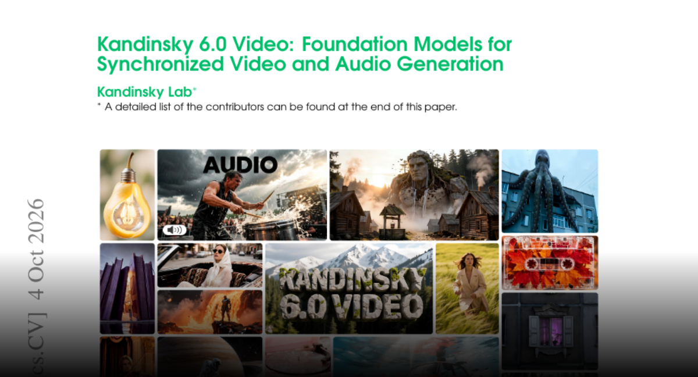
Kandinsky 6.0 Video 包含 30 亿和 290 亿参数模型，可生成带同步 44 kHz 音频及唇形同步的五秒视频。双流架构通过双向交叉注意力连接视频和音频，超分辨率提升至全高清。作者发布 MIT 许可的代码、权重和 diffusers 集成，并报告相较前代的人类偏好改善。
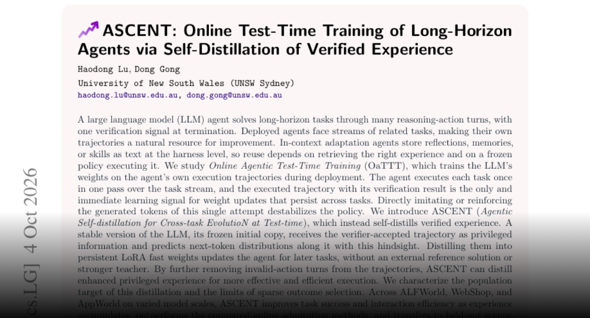
ASCENT 研究智能体在连续任务中在线更新权重。它将经过验证的轨迹交给冻结初始模型，以额外上下文产生分布，再自蒸馏到持久 LoRA 权重，而非直接强化单次生成轨迹。作者在 ALFWorld、WebShop 和 AppWorld 上报告成功率与交互效率改善，但这些仍是基准结果。
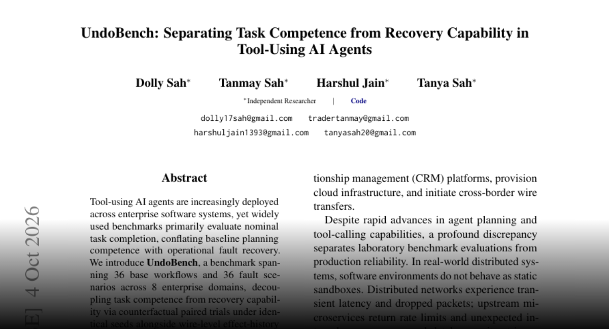
UndoBench 将正常任务完成与工具故障后的恢复能力分开评估。在确认丢失实验中，常规能力达到 83.54%，条件恢复成功率仅 46.72%，简单重试在 53.33% 的试验中造成重复外部效果。结果表明，应单独测量恢复能力，并在写入可能已发生时依靠验证及服务端幂等机制。